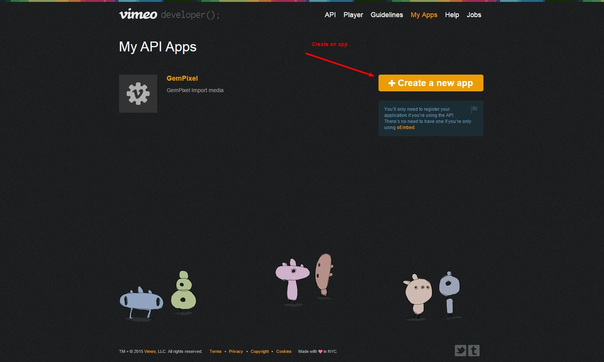
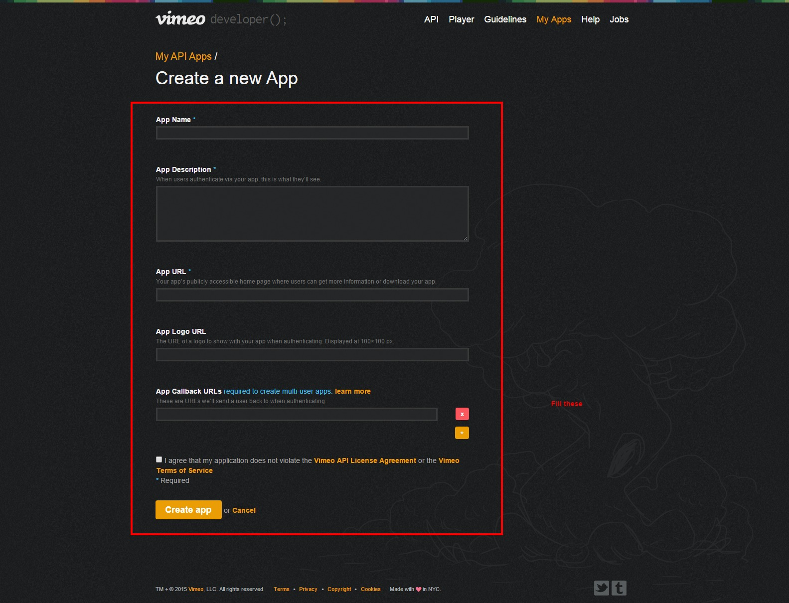
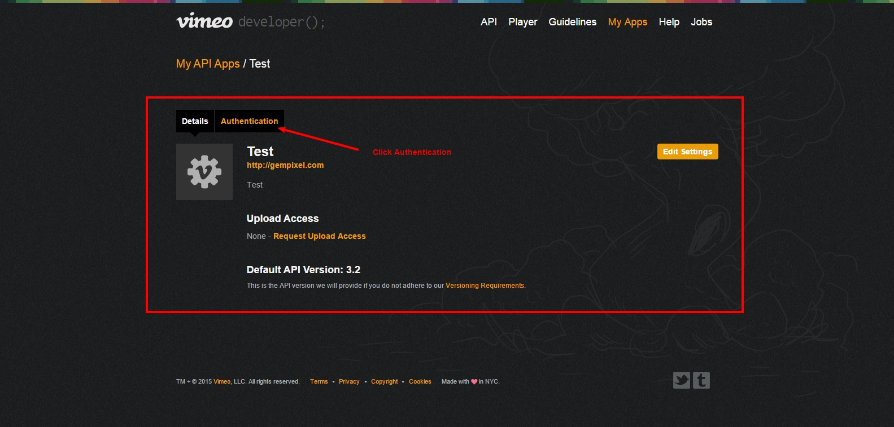
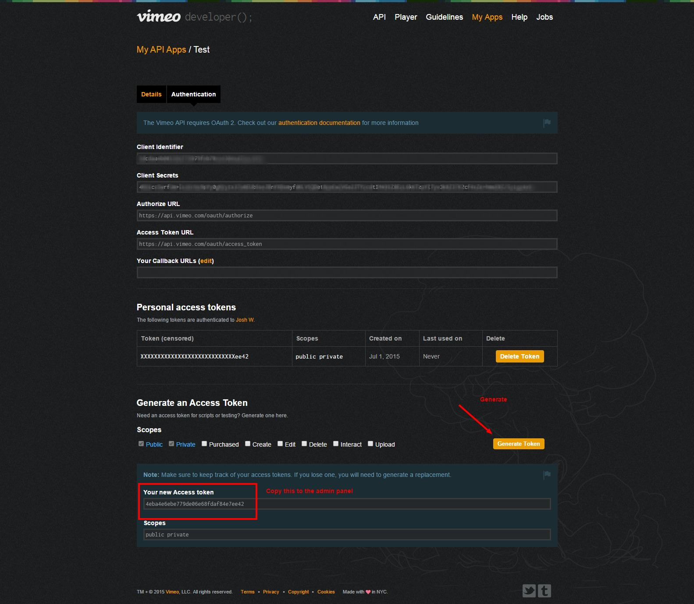

The script now comes with custom API system that enables only the admin to develop app. First you need to enable the API system via the admin panel under "Social & API Settings". Then you will be able to define a custom API key which you can use to grab media. For all requests, you need to send the key parameter which includes your API key.
Media EndPoint
This endpoint allows you to retrieve information regarding a particular media. The endpoint is
GET /api/view/UNIQUEID
Example: http://yoursite.com/api/view/abcd5?key=YOURAPIKEY
Results Example
{
"status":"ok",
"data":{
"id":"jezQH",
"url":"http:\/\/mysite.com/view\/don-omar-taboo\/jezQH",
"title":"Don Omar - Taboo",
"description":"Download now on:\niTunes: http:\/\/bit.ly\/1emlRdS \nAmazon: http:\/\/amzn.to\/17xXn96\n\nVisit http:\/\/universalmusica.com\/donomar for more music and news from Don Omar.",
"duration":"293",
"votes":"1",
"views":"11",
"likes":"1",
"comments":"2",
"embed":"<iframe src='http:\/\/mysite.com\/embed\/jezQH' frameborder='0' width='550' height='350' scrolling='no' allowfullscreen><\/iframe><p><a style='color: #000; text-decoration: none;' href='http:\/\/mysite.com\/view\/don-omar-taboo\/jezQH' title='Don Omar - Taboo'>Don Omar - Taboo<\/a><\/p>",
"author":{
"name":"Admin",
"link":"http:\/\/mysite.com\/user\/admin"
}
}
}
Search EndPoint
This endpoint allows you to search media. The endpoint is
GET /api/search/KEYWORD
Example: http://yoursite.com/api/search/KEYWORD?key=YOURAPIKEY&limit=RESULTSPERPAGE&order=[views or date or votes]&page=CURRENTPAGE
Results Example
{
"status":"ok",
"results":10,
"prev":4,
"next":null,
"data":[
{
"id":"8UDm4",
"url":"http:\/\/localhost\/ems\/1.5\/view\/mcdonalds-excorcism-prank-ownage-pranks\/8UDm4",
"title":"McDonalds Excorcism Prank - Ownage Pranks",
"description":"This is a second call I did to a McDonalds manager who used to be a crack head. The last time I spoke to him he said he could remove the devil from my soul.. so this time I called back and took him up on his offer.. lmao\n\n\nBecome my facebook fan! I pre-release my videos on facebook, so you'll see them before they appear on my YouTube profile (The facebook version is uncensored) http:\/\/www.facebook.com\/OwnagePranks\n\nRegister and join the community @ http:\/\/www.ownagepranks.com\n\nFollow me on twitter! http:\/\/twitter.com\/OwnagePranks\n\nIf you do all this you'll definitely catch my next live show!\n\nComment and subscribe!",
"duration":"325",
"votes":"0",
"views":"0",
"likes":"0",
"comments":"0",
"embed":"<iframe src='http:\/\/localhost\/ems\/1.5\/embed\/8UDm4' frameborder='0' width='100%' height='450' scrolling='no' allowfullscreen><\/iframe>"
},
{
"id":"PwRoR",
"url":"http:\/\/localhost\/ems\/1.5\/view\/insane-cheating-girlfriend-prank-animated-ownage-pranks\/PwRoR",
"title":"Insane Cheating Girlfriend Prank (animated) - Ownage Pranks",
"description":"I called a black guy as Tyrone and pretended like I've been cheating with his long-term girlfriend. His reaction is amazing. Help support these animations by sharing the video with a friend! :) Subscribe for free to catch my future videos - http:\/\/own.ag\/youtube\n\nSecond Channel Reveal (Part 2) - http:\/\/own.ag\/eN\n\nIndian Windows Scammer Prank - http:\/\/own.ag\/cJ\nRidiculous Home Buying Prank - http:\/\/own.ag\/dD\n\nFacebook--------------------- http:\/\/facebook.com\/OwnagePranks\nTwitter ------------------------ http:\/\/twitter.com\/OwnagePranks\n2nd channel \/ Extras ---- http:\/\/youtube.com\/MrOwnagePranks\nMerchandise ---------------- http:\/\/ownagepranks.spreadshirt.com\n\nAnimated by Sam T - http:\/\/youtube.com\/EbolaWorld",
"duration":"264",
"votes":"0",
"views":"0",
"likes":"0",
"comments":"0",
"embed":"<iframe src='http:\/\/localhost\/ems\/1.5\/embed\/PwRoR' frameborder='0' width='100%' height='450' scrolling='no' allowfullscreen><\/iframe>"
}
]
}
User EndPoint
This endpoint allows you to get a user's media. The endpoint is
GET /api/user/USERNAME
Example: http://yoursite.com/api/user/USERNAME?key=YOURAPIKEY&limit=RESULTSPERPAGE&order=[views or date or votes]&page=CURRENTPAGE
Results Example
{
"status":"ok",
"results":142,
"prev":0,
"next":2,
"author":{
"name":"",
"description":"We have the best videos every! Sit back and enjoy our videos!",
"cover":"http:\/\/localhost\/ems\/1.5\/static\/covers\/cover-1.jpg",
"avatar":"http:\/\/localhost\/ems\/1.5\/content\/users\/JOjSxejI_avatar.jpg"
},
"data":[
{
"id":"jezQH",
"url":"http:\/\/localhost\/ems\/1.5\/view\/don-omar-taboo\/jezQH",
"title":"Don Omar - Taboo",
"description":"Download now on:\niTunes: http:\/\/bit.ly\/1emlRdS \nAmazon: http:\/\/amzn.to\/17xXn96\n\nVisit http:\/\/universalmusica.com\/donomar for more music and news from Don Omar.",
"duration":"293",
"votes":"1",
"views":"11",
"likes":"1",
"comments":"2",
"embed":"<iframe src='http:\/\/localhost\/ems\/1.5\/embed\/jezQH' frameborder='0' width='100%' height='450' scrolling='no' allowfullscreen><\/iframe>"
}
]
}
Youtube and Vimeo API Key
Google API Key
- Login with your Google Account at https://console.developers.google.com
- Fill the credetials page
- Follow images below
- Then paste your API code in the admin panel.


Vimeo API Key
- Login with your Vimeo Account at https://developer.vimeo.com
- Follow images below
- Then paste your API code in the admin panel.



